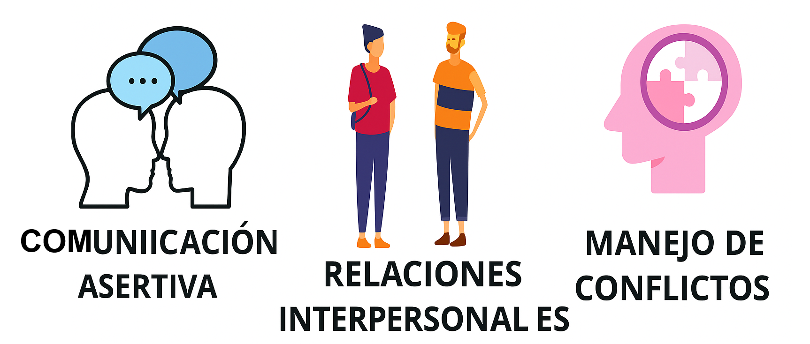
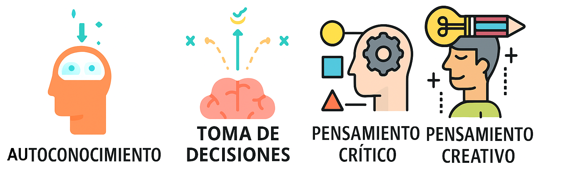

CONECTATE CON TU SALUD MENTAL
INICIO
¿QUIENES SOMOS?
Conéctate con tu Salud Mental es una extensión del programa de psicología de la Universidad Simón Bolívar, sede Cúcuta. Su misión es fortalecer las habilidades para la vida (HpV) de los psicólogos en formación, promueve el desarrollo del autoconocimiento, manejo emocional, habilidades sociales y cognitivas que ayudan a enfrentar los desafíos de la vida cotidianos.
Su propósito es brindar a los estudiantes herramientas para el bienestar integral, con el fin de potenciar sus capacidades, fortalecer su desarrollo personal y promover la salud mental.
¿QUÉ SON LAS HpV?
INTRODUCCIÓN
En la vida cotidiana nos enfrentamos a distintos desafíos, no siempre tenemos un manual para manejar lo que sentimos, cómo nos relacionamos o cómo tomar decisiones importantes. Sin embargo, hay un conjunto de habilidades que pueden convertirse en nuestras mejores aliadas: las habilidades emocionales, sociales y cognitivas. Estas no solo nos ayudan a conocernos mejor, sino también a convivir de manera más sana, resolver conflictos y crecer como personas. A continuación te contaremos de que se trata las habilidades para la vida.
HABILIDADES EMOCIONALES

- Empatía: es la capacidad de ponerse en el lugar del otro, comprendiendo sus pensamientos, emociones y experiencias sin juzgar, y con una actitud de respeto y aceptación.
Ej: Parece que estás triste, ¿quieres contarme? - Manejo de emociones: Saber leer y comprender lo que comunican las emociones propias y las ajenas. Identificar lo que sientes y expresarlo o entenderlo de forma sana.
Ej: respirar, comprender y expresar. - Manejo de tensión y estrés: Capacidad para aprender a afrontarlas de manera constructiva, sin instalarse en un estado habitual de estrés ante las situaciones tensas.
Ej: reconocer situaciones de tensión y aprender a gestionarlas haciendo pausa, organizar tareas y manejo de tiempo.
HABILIDADES SOCIALES

- Comunicación asertiva: La persona que se comunica asertivamente expresa con claridad lo que piensa, siente o necesita, teniendo en cuenta los derechos, sentimientos y valores de sus interlocutores.
Ej: Un compañero interrumpe en el grupo; una respuesta asertiva es pedirle que espere a que termines antes de hablar, para luego escucharlo con atención. - Relaciones interpersonales: Establecer y mantener relaciones basadas en el respeto, la igualdad (sin sentirse menos ni más que nadie) y la autenticidad de las partes (sin fingimientos).
Ej: En un trabajo en grupo, todos aportan ideas. En lugar de competir, escuchan y combinan lo mejor de cada propuesta, demostrando respeto, igualdad y autenticidad para lograr un objetivo común. - Manejo de conflictos: Podemos aceptar los conflictos como motor de la existencia humana, dirigiendo nuestros esfuerzos a desarrollar estrategias y herramientas que permitan manejarlos de forma creativa y flexible, identificando en ellos oportunidades de cambio y crecimiento personal y social.
Ej: En un equipo, dos personas con ideas opuestas deciden escuchar y combinar lo mejor de cada propuesta, transformando el conflicto en una oportunidad para mejorar y fortalecer su relación.
HABILIDADES COGNITIVAS

- Autoconocimiento: Capacidad de reconocemos a nosotros mismos, saber qué fortalezas tengo y con debilidades tengo que mejorar.
Ej: Un estudiante identifica que suele postergar las tareas porque le cuesta concentrarse cuando hay ruido. Al reconocerlo, busca espacios tranquilos para estudiar y organiza un horario con pausas activas. Gracias a este autoconocimiento, logra mejorar su rendimiento y reducir el estrés. - Toma de decisiones: es la capacidad de elegir entre diferentes alternativas de manera consciente y proactiva, considerando necesidades, valores, motivaciones, influencias y consecuencias, con el fin de dirigir el rumbo de la propia vida y asumir la responsabilidad de los resultados que se generen.
Ej: Una persona evalúa dos ofertas laborales: una con mejor salario y poco tiempo libre, y otra con menor pago pero horarios flexibles para estudiar. Tras reflexionar sobre sus valores y metas, opta por la segunda, priorizando su educación y calidad de vida. - Pensamiento creativo: Pensar creativamente es la capacidad para idear algo nuevo, relacionar algo conocido de forma innovadora o apartarse de esquemas de pensamiento o conducta habituales.
Ej: En una escuela con pocos recursos, estudiantes y profesor reutilizan botellas, cartón y telas para decorar el salón, demostrando cómo la creatividad resuelve problemas y embellece el espacio. - Pensamiento crítico: La persona crítica es capaz de cuestionar, analizar y reflexionar sobre sus experiencias personales, académicas y profesionales. Examina la información con criterio y llega a conclusiones propias que fortalecen su toma de decisiones.
Ej: Un estudiante investiga y prueba varias técnicas de estudio para descubrir cuál le funciona mejor según su estilo, tomando una decisión basada en su experiencia y reflexión.
REFERENCIA:
Alessandra, (s/f), Las habilidades que debes tener en tu vida. Extraido el 11 de noviembre del 2025. De https://pin.it/7wnNoXQ88
habilidadesparalavida, (s/f), las 10 habilidades. Extraido el 18 de septiembre del 2025. De https://habilidadesparalavida.net/habilidades.php
OpenAI. (2025). ChatGPT (versión del 7 de noviembre de 2025) [Mapa conceptual habilidades vida]. Extraido el 18 de septiembre del 2025. De https://chatgpt.com/share/6914b9a1-e950-8004-8334-280fe7c83e4f
HERRAMIENTAS PRÁCTICAS PARA LA VIDA UNIVERSITARIA
INTRODUCCIÓN
En la universidad no solo aprendemos de libros, clases y exámenes, también enfrentamos retos diarios que ponen a prueba cómo sentimos, pensamos y nos relacionamos. Para manejarlos, existen habilidades que nos ayudan a crecer y vivir mejor: las emocionales, sociales y cognitivas.
Estas habilidades son como herramientas que usamos a diario: nos permiten reconocer y manejar lo que sentimos, comunicarnos mejor con los demás, resolver conflictos y tomar decisiones acertadas. Al fortalecerlas, no solo mejoramos nuestro rendimiento académico, sino también nuestra vida personal y nuestras relaciones. El siguiente cuadro muestra las habilidades para la vida y cómo aplicarlas en situaciones cotidianas universitarias. Además, ofrece tips prácticos que ayudan a fortalecer el bienestar personal, la comunicación y el manejo emocional en el ámbito académico:
.png)
CONCLUSIÓN
Las habilidades emocionales, sociales y cognitivas son claves para enfrentar los retos de la universidad. Con pequeños pasos como escuchar, organizar el tiempo, comunicarse con respeto y pensar de forma crítica, es posible mejorar el rendimiento académico, fortalecer las relaciones y cuidar el bienestar personal. Al practicarlas día a día, los estudiantes no solo superan las dificultades, sino que también crecen como personas y se preparan mejor para su vida profesional y personal.
✨ “Conectar con tu salud mental es invertir en tu bienestar. Cada herramienta que aprendes te ayuda a pensar, sentir y relacionarte de manera más saludable.” ✨
INFORMACIÓN
📍 Ubicación:
Nos encontramos a lado del Programa de Psicología de la Sede 1, justo en frente del laboratorio Cámara de Gesell.
📲 Más información:
Síguenos y contáctanos a través de nuestra página oficial en Instagram: conectate_contusaludmental
https://www.instagram.com/conectate_contusaludmental/
🚀 ¡Inscríbete a nuestro servicio! : https://acortar.link/nUnnEe
Obra publicada con Licencia Creative Commons Reconocimiento Compartir igual 4.0